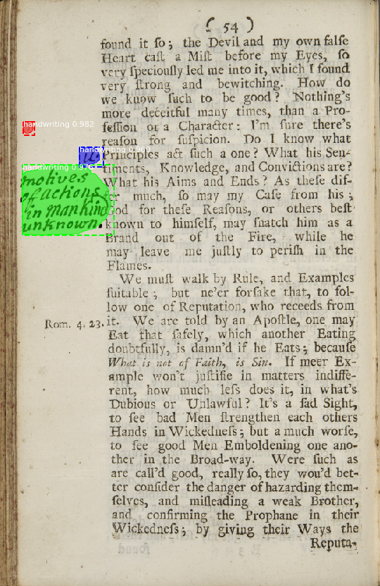

IIIF and AI/Machine Learning
Automatic detection and highlighting of handwritten annotations in printed books
For this case study, we'll get some hands-on experience with experimental code developed by librarians, students and staff at the UCLA Digital Library Collections Lab to detect handwritten marginal annotations in books from the recently digitized Early Modern Annotated Books collection at UCLA's William Andrews Clark Memorial Library.

Full disclosure: the original training set of tagged handwritten annotations was crowd-sourced using this Zooniverse site, which does not use a IIIF-based viewer/annotation system!
The automated detection system, however, which is built upon a "Mask Region-based Convolutional Neural Network" (MRCNN) model trained on the crowd-sourced data, has been designed to access new book page images via IIIF image API services and to produce manifests with annotation lists identifying the detected annotations, which can be opened in a IIIF viewer.
The code and documentation for this system, called Omniscribe, is on Github.
We'll run this code on some sample manifests. Because the software requires a fairly complex system environment, including Tensorflow, Google's open-source deep-learning Python libraries, and also runs faster on systems with special graphics-processing (GPU) or "Tensor processing" (TPU) hardware, we won't bother to install the software on our own machines. Rather, we'll set it up and run it within a cloud-based computational "notebook" environment from Google's Colaboratory ("Colab") service, which also provides access to cloud-based TPUs.
The notebook is available at this link: https://colab.research.google.com/drive/10llFSdKa8uK3PVTNwHjxV80mleQ5ZXk2
As a group, we'll walk through the steps necessary to access the notebook and to run a copy of it in our own Google accounts. Notebooks like these are designed to incorporate documentation as well as code, so just by reading the inline instructions in the notebook, you should be able to follow the steps needed to run the Omniscribe software on a IIIF manifest and then to view the detected annotations in a local instance of Mirador
Please use one of the following manifests as your source of input page images when running the Omniscribe "inferencer" in the notebook:
- https://marinus.library.ucla.edu/iiif/annotated/uclaclark_BF1681A441713_11-20.json
- https://marinus.library.ucla.edu/iiif/annotated/uclaclark_BF1681A441713_21-30.json
- https://marinus.library.ucla.edu/iiif/annotated/uclaclark_BF1681A441713_31-40.json
- https://marinus.library.ucla.edu/iiif/annotated/uclaclark_BF1681A441713_41-50.json
- https://marinus.library.ucla.edu/iiif/annotated/uclaclark_BF1681A441713_51-60.json
- https://marinus.library.ucla.edu/iiif/annotated/uclaclark_SB322S53_11-20.json
- https://marinus.library.ucla.edu/iiif/annotated/uclaclark_SB322S53_21-30.json
- https://marinus.library.ucla.edu/iiif/annotated/uclaclark_SB322S53_31-40.json
- https://marinus.library.ucla.edu/iiif/annotated/uclaclark_SB322S53_41-50.json
- https://marinus.library.ucla.edu/iiif/annotated/uclaclark_SB322S53_51-60.json
Object detection in Edo-period Japanese illustrations
This project was inspired by the IIIF-based Collection of Facial Expressions "curation viewer" project at the Japanese Center for Open Data in the Humanities, a joint project of the National Institute of Informatics and the Institute of Statistical Mathematics.
Another impressive IIIF + AI-based project from CODH: the Hentaigana Image Recognition interface.